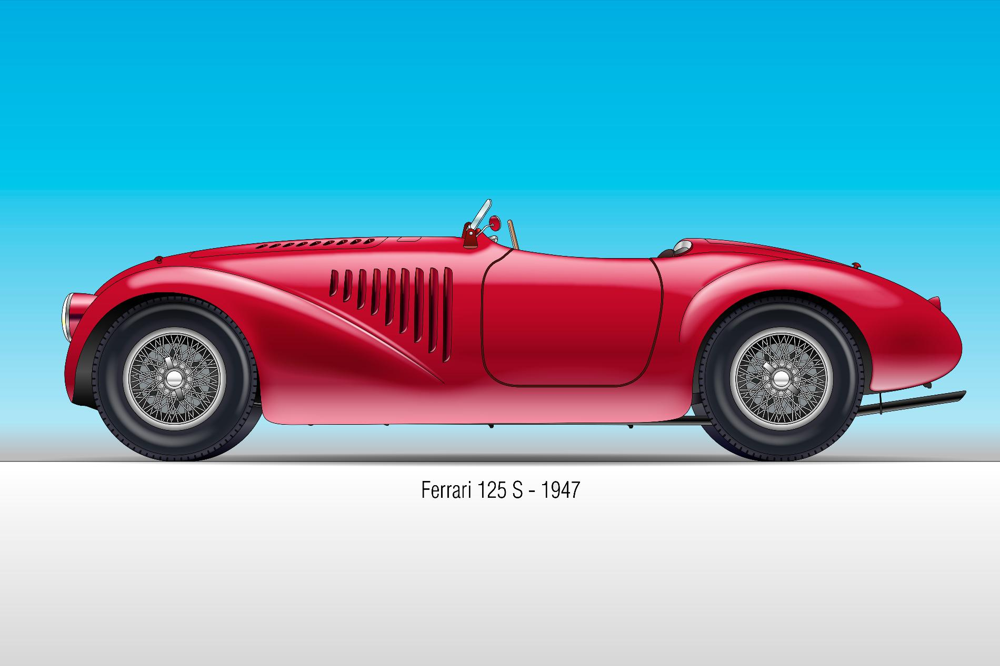

La 125 S est le tout premier modèle à sortir des ateliers avec le célèbre emblème du cheval cabré (le "Cavallino Rampante"). Présentée le 11 mai 1947 sur le circuit de Piacenza, elle a marqué le début d'une ère nouvelle dans le monde de l'automobile.
Sous son long capot rouge se cachait une véritable œuvre d'art : un moteur V12 révolutionnaire conçu par l'ingénieur Gioacchino Colombo. Bien qu'elle n'ait pas remporté sa toute première course, Enzo Ferrari l'a qualifiée d'"échec prometteur". Quelques jours plus tard, elle remportait sa première victoire, lançant définitivement le mythe Ferrari.
